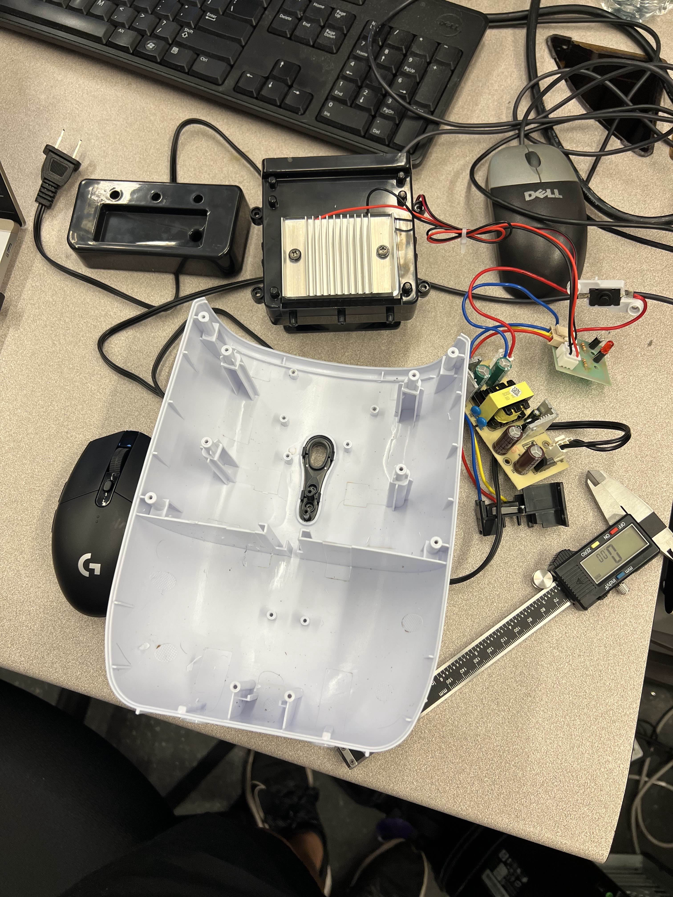
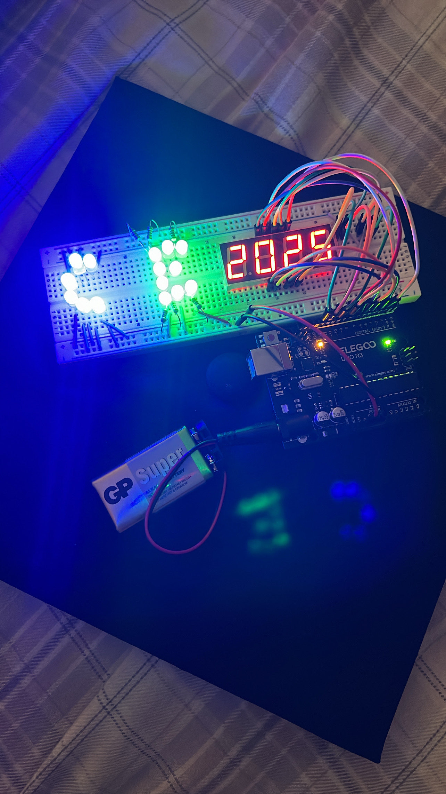
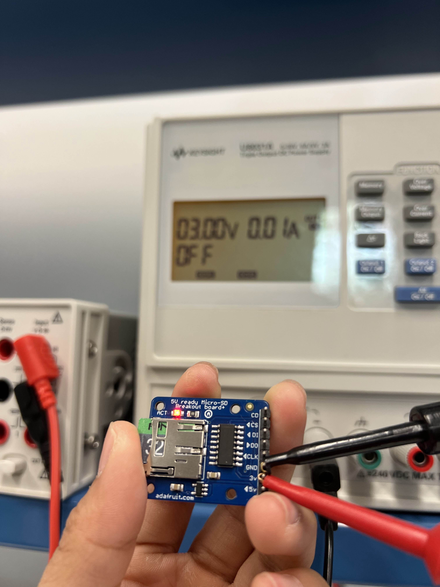
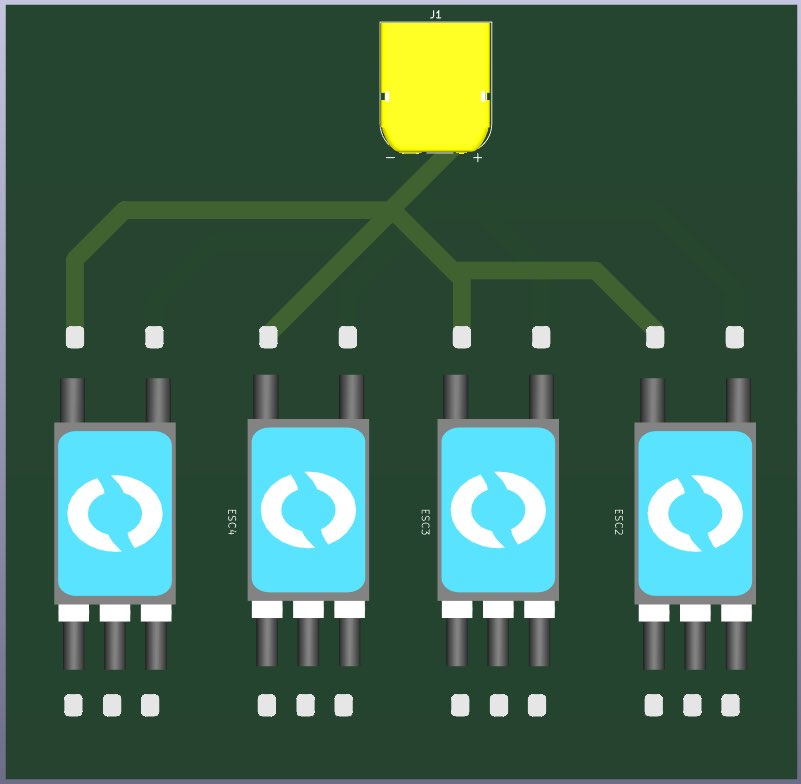
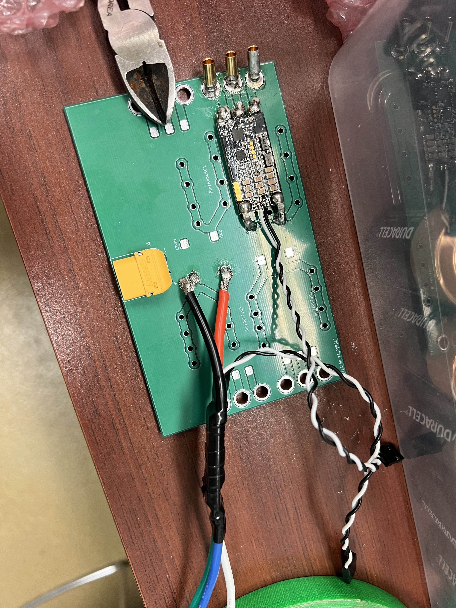

About Me :)
Hi, my name is Emily Ngo and I'm a student at the University of Washington. I'm studying computer engineering to learn more about how hardware and software interact and to break down what happens behind the scenes of both applications and electronics! I also enjoy creating my own projects. One project I'm currently working on is something similar to the doll from Squid Game :)
I have always been fascinated by hardware and electronics. As a kid, I would spend hours taking apart gadgets just to see how they worked. That curiosity grew into hands-on experience as I joined my robotics team's fabrication team throughout middle and high school, working on the electronics that created a working robot.
In college, I was directly admitted into the Computer Science and Engineering program to deepen my understanding of both hardware and software, learning what happens behind the screen and inside the circuits. My freshman year focused on building a strong foundation in programming, and by sophomore year, I began exploring hardware with research.
Junior year was when everything came together. I developed SproutSynch, an automatic plant watering system, with my peers and joined the UWROV underwater robotics team. This summer, I have been working with a company on research and development for an autonomous drone, combining my interests in robotics, hardware, and software into real-world innovation.
Outside of academics and work, I enjoy staying active and creative. I spend my time at the gym, bouldering, being with friends and family, play video games, watching shows, painting, and experimenting with side projects for fun.
Pictures from Junior Year

Working on summer research modifying the circuit and casing of a dehumidifier

Working on LLM for the SnapAR project at DubHacks 2025 hackathon

Awarded Best Use of Data at the NASA Space Apps Challenge

One of the first embedded systems labs for CSE 474 (Intro to Embedded Systems)

Gathering data from temperature and humidity system testing

Desoldering work for UWROV project

Prototype design for graduation cap project (too heavy, so not used)

Testing for SproutSynch system

Troubleshooting with microSD breakout board

Developing PCB for ESCs to share the same power source in UWROV

Finalizing the PCB and soldering components

My bouldering project (I hate dinos :/)
❮
❯